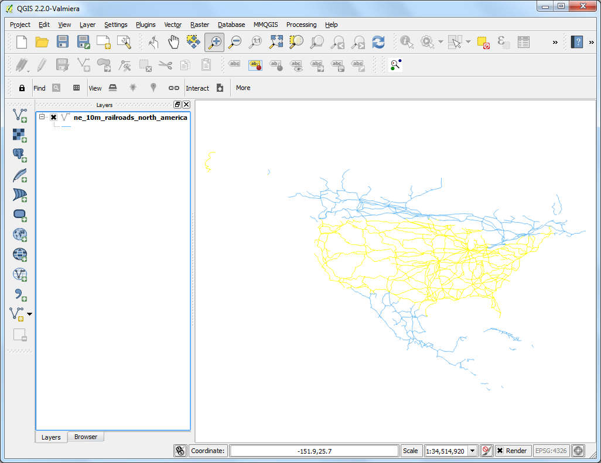
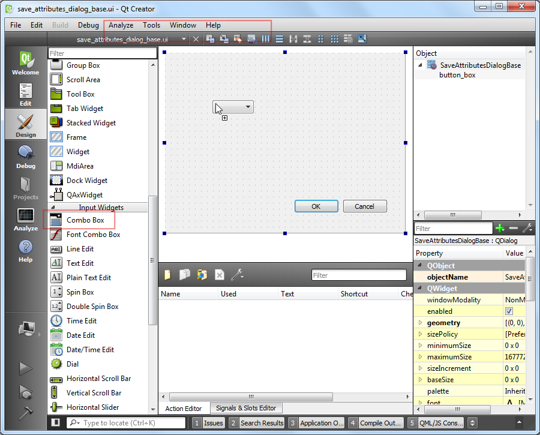

Подсчёт длины линий и статистики
[ Download PDF A4 Letter ]
В QGIS имеются встроенные функции для подсчёта различных геометрических свойств, таких как длина, площадь, периметр и т.д. Этот урок покажет Вам, как использовать Калькулятор полей, чтобы добавить столбец со значением длины каждого элемента.
Обзор задачи
Мы используем ломаную линию железных дорог Северной Америки и попробуем определить общую длину железных дорог США.
Другие навыки, которые Вы узнаете
Использование выражений для выделения элементов.
Репроекция слоя из географической в проецированную систему отсчёта координат (СОК).
Просмотр статистики значений атрибута слоя.
Методика
Перейдите в .

Найдите скачанный архив ne_10m_railroads_north_america.zip и нажмите ОК.

В окне Выберите слои для добавления выберите слой ne_10m_railroads_north_america.shp.

Как только слой загрузится, Вы увидите линию, показывающую железные дороги на территории Северной Америки. Так как мы хотим посчитать длину только железных дорог США, нам нужно выбрать линии, находящиеся в США. Щёлкните правой кнопкой мыли по слою и выберите Открыть таблицу атрибутов.

У этого слоя есть атрибут sov_a3. Это трёхзначный код страны, в которой находится элемент. Мы может использовать этот атрибут, чтобы выбрать элементы, находящиеся в США.

В окне Таблица атрибутов нажмите на кнопку Выбрать элементы по выражению.

Откроется новое окно Выбор по выражению. Найдите атрибут sov_a3 под Поля и значения в секции Список функций. Дважды кликните по нему, чтобы добавить его в поле Выражение. Завершите выражение, написав "sov_a3" = 'USA'. Нажмите Выбрать и затем Закрыть.

В основном окне QGIS вы увидите, что линии внутри США выделились и окрасились в жёлтый.

Теперь давайте сохраним наше выделение в новый файл формы. Щёлкните правой кнопкой мыши по слою ne_10m_railroads_north_america и выберите Сохранить выделение как....

Нажмите Обзор и назовите выходной файл usa_railroads.shp. Мы также хотим изменить СОК слоя. Нажмите Обзор рядом с СОК.
Примечание
Встроенные функции, использующие геометрические элементы, используют единицы измерения СОК слоя. Географические системы отсчёта координат(СОК), такие как EPSG:4326 используют градусы, т.е. длина элементов была бы в градусах, а площадь - в квадратных градусах, что довольно бессмысленно. Вам понадобится проецированная система отсчёта координат, использующая метры или футы для подсчёта.

Так как нам важна лишь длина, давайте выберем равноудалённую проекцию. Напишите north america equ в поле Фильтр. В списке результатов выберите North_America_Equidistant_Conic EPSG:102010 в качестве СОК. Нажмите ОК.

В Save векторный слой, как... диалог, проверяют Add сохраненный файл, чтобы нанести на карту и щелкнуть OK.

Однажды окончания экспортного процесса, вы будете видеть, что новый слой usa_railroads загрузился в QGIS. Вы можете не проверить коробку рядом с ne_10m_railroads_north_america слоем, чтобы выключить это, так как нам не нужно это больше.

Щелкните правой кнопкой по слою usa_railroads и выберите Open Припишите Таблицу.

Сейчас, настало время добавить колонку с длиной каждой особенности. Поместите слой в редактирование метода, щелкая по Toggle редактирование кнопки. Однажды в редактировании метода, щелкают Open кнопка калькулятора поля.

В Field Калькулятор, check Create новое поле. Введите length_km как Output имя поля. Выберите Decimal номер (действительно) ** как :guilabel:`Output тип` поля. Измените output :guilabel:`Precision` к **2. В Function составьте список группы, находят $length под Geometry. Щелкните дважды это, чтобы добавить это к Expression. Завершите выражение как $length / 1000, потому что наш слой CRS находится в meters единице и мы хотим output в km. Щелкните OK.

Обратно в Attribute Стол, вы будете видеть новый колонка length_km появитесь. Щелкните Toggle редактирование кнопки, чтобы сохранить изменения к столу свойства.

Теперь, когда мы имеем длину каждой индивидуальной линии в нашем слое, мы можем легко добавить это все и находят Total длину. Идите к Инструменты –> Анализа –> Основы.

Выберите Input Векторный слой как usa_railroads. Выберите Target поле как length_km и щелкают OK. Вы будете видеть, как различная статистика появляется. Sum значение - полная длина железных дорог, которые мы надеемся найти.
Примечание
Этот ответ изменится слегка, если различный проект выбран.На практике, длины линии для дорог и других линейных особенностей взвешены на земле и обеспечены, поскольку приписывает набору данных. Этот метод работает в отсутствии такого свойства и как аппроксимация фактических длин линии.